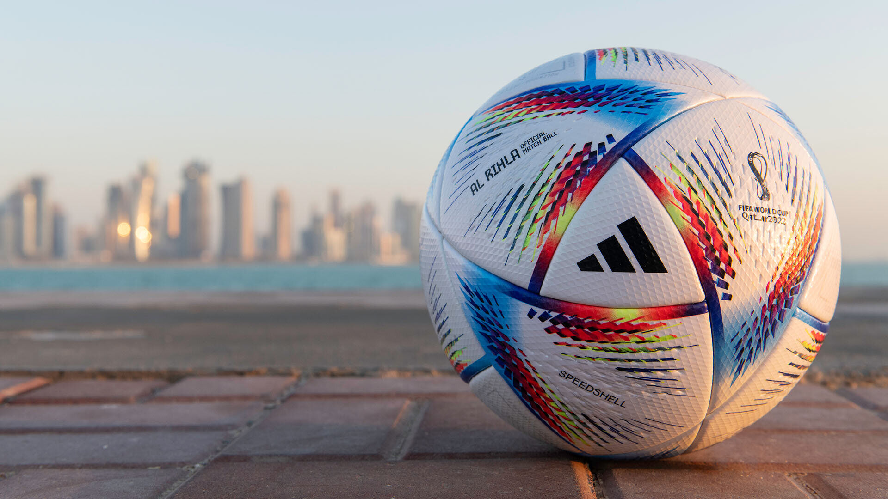
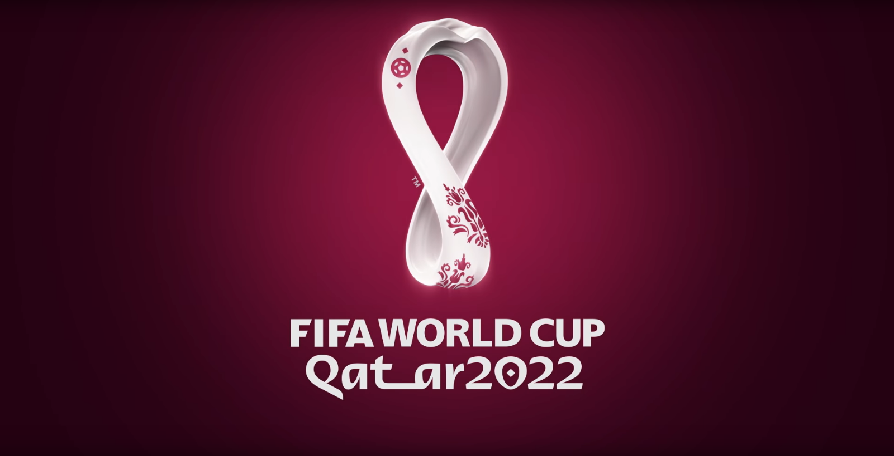

Группа А Эквадор Сенегал Нидерланды Катар
Группа B Уэльс Иран США Англия
Группа C Саудовская Аравия Польша Мексика Аргентина
Группа D Австралия Тунис Дания Франция
Группа E Коста-Рика Япония Германия Испания
Группа F Канада Марокко Хорватия Бельгия
Группа G Камерун Сербия Швейцария Бразилия
Группа H Гана Южная Корея Уругвай Португалия

Где и когда пройдёт чемпионат мира по футболу 2022
Чемпионат мира по футболу состоится с 21 ноября по 18 декабря в пяти городах Катара: Дохе, Ар-Райяне, Лусаиле, Аль-Хоре и Аль-Вакре. Решение о проведении мирового первенства в этой ближневосточной стране было принято на выборах, организованных ФИФА, двенадцать лет назад. Результаты голосования в Цюрихе огласил бывший руководитель мирового футбола Йозеф Блаттер. Очень многие специалисты и представители средств массовой информации назвали выбор ФИФА как минимум неоднозначным. Вызывало вопросы не только место проведения чемпионата, но и сроки. В Европе рубеж осени и зимы это разгар клубных турниров. Однако хозяева первенства заверили всех, что все будет организовано на высшем уровне.
Команды группового этапа
В играх группового этапа примут участие 32 сборные, представляющие все мировые конфедерации. Большинство команд традиционно представляют УЕФА — 13 команд, шесть азиатских команд, включая хозяев и сборную Австралии, пять команд представляют Африку и по четыре Северную и Южную Америку. Вот как образом после жеребьевки они были распределены по группам.Стадионы ЧМ-2022
- «Эль-Тумама», находится в Дохе и примет восемь матчей, вместимость — сорок тысяч зрителей.
- «Рас Абу Абуд», расположен в Дохе, здесь команды сыграют семь поединков, вместимость — сорок тысяч человек.
- «Лусаил» находится в одноименном городе, примет десять матчей, включая полуфинал и финал, самая большая вместимость — 80 тысяч болельщиков.
- «Эль-Бейт» был построен в городе Эль-Хауре, вмещает 60 тысяч зрителей и примет девять матчей, один из них полуфинальный.
- «Эль-Джануб» в городе Эль-Вакре примет семь поединков, его вместимость — сорок тысяч болельщиков.
- «Эдьюкейшн Сити» находится в Эр-Райяне и вмещает 45 тысяч человек, здесь состоятся восемь поединков.
- «Ахмед Бин Али» в Эр-Райяне примет семь матчей, его вместимость 45 тысяч зрителей.
- «Халифа Интернешнл» расположен также в Эр-Райяне, здесь пройдут восемь встреч, включая матч за третье место, вместимость — 45 тысяч зрителей.
